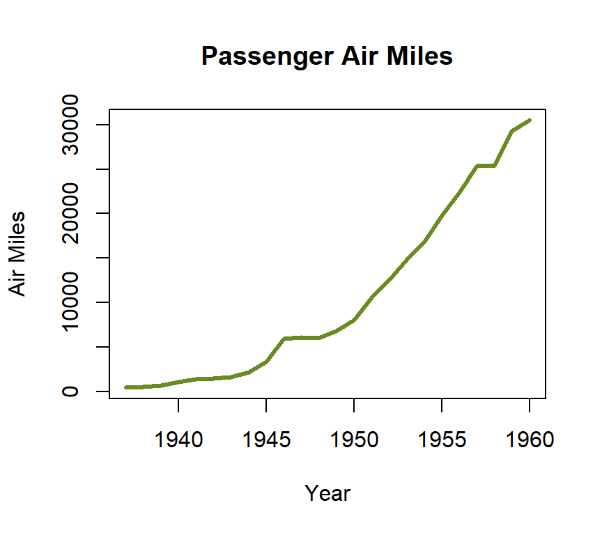

Lab 8 Visualizing Data
8.1 Introduction
It is often very useful to visualize data frames rather than simply observe a table. Visualizations can make subtle relationships evident, and those relationships could be missed by just looking at a data table. Earlier tutorials described visualization techniques for descriptive and frequency data and this tutorial applies the same consideration to quantitative data.
8.2 Histogram
A histogram is a graph that shows the disribution of data that are continuous in nature, for example, age or height. A histogram resembles a bar chart but there is an important difference: a histogram is used for continuous data while a bar chart is used for categorical data. To emphasize that difference, histograms are normally drawn with no space between the bars (the data are continuous along the entire x-axis) while bar charts are normally drawn with a small space between bars (the data are categorical along the x-axis). As an example of a histogram, the next figure shows the New York city high temperature from May to September 1973 from the airquality data frame.
Notice that there is not a separate bar for each temperature; rather, R has clustered five temperatures into a single bar. Thus, there is a bar that combines the temperatures 70-74 and not separate bars for each of those temperatures. This histogram helps researchers determine if temperature is normally distributed, that is, does it display a typical “bell” curve. It should be fairly obvious from this graph that there are more temperatures around the 80° level than at either extreme so this histogram does indicate that the data are normally distributed.
As another example, the following figure shows a histogram for the body temperature of a beaver recorded every 10 minutes over the course of several hours, as found in the [beaver1] data frame. This histogram shows normally-distributed data though there is an outlier at a temperature of 37.6°.
Histograms can also indicate data that are skewed and this would be important to researchers during a project’s exploratory phase. Consider, for example, the following figure which is the shape of petroleum rock samples in the rock data frame. While this histogram still indicates a normal distribution with levels falling off from a peak, there is a longer “tail” to the right so the data have a positive skew.
Finally, consider the histogram in the following figure, which is taken from the peri vector in the rock data frame. This shows a bi-modal distribution where there are two clear peaks in the data. It is critical for researchers to know that the data are bi-modal before they begin analyzing it since having two modes can cause certain statistical tests to fail.
8.2.1 Demonstration: Histogram
The following script creates an example histogram.
- Line 2: This is the beginning of the histogram function (it ends on Line 8). For this histogram the Speed variable from the morley data frame is specified as the data source for the histogram.
- Lines 3-5: This creates the main title of the histogram along with the labels for the x-axis and y-axis.
- Line 6: To create a histogram, R analyzes the values contained in a variable and creates “bins” for those values. That means that many of the continuous values will be grouped into a single bin for analysis. The “breaks” parameter tells R how many breaks to allow in the variable. In this case, eight breaks are specified, which would create nine bins. R will analyze the data and use the “breaks” parameter as a “suggestion” and will only use that number of breaks if it makes sense for the data being graphed. Often, changing the number of breaks by just one or two will not change the histogram produced so researchers should play around with the “breaks” number to get the best possible representation of the data.
- Line 7: This specifies that 10 colors will be used from the “cm.color” palette to shade the various bars in the histogram. Researchers need to experiment a bit with the color palette and number of colors to get the best result; however, “cm.color” along with the number of bars in the histogram seems to work well for this histogram. (Note: More information about color can be found in the About Colors section in the appendix.)
8.2.2 Guided Practice: Histogram
Using the USJudgeRatings data frame, create a histogram of the INTG vector. The histogram should meet these specifications:
- Title: US Judge Ratings
- X-axis label: Integrity Rating
- Y-axis label: Frequency
- Breaks: 11
- Color: eight colors from the cm.colors palette
8.2.3 Activity: Histogram
Using the cafe data frame, create a histogram of age. The histogram should meet these specifications:
- Title: Histogram
- X-axis label: Age
- Y-axis label: Frequency
- Breaks: 10
- Colors: 12 colors from the topo.colors palette
Copy/paste the histogram in the deliverable document for this lab.
8.3 Density Plot
A density plot provides the same information as a histogram but it is smoothed out so it is easier to read. Here is the same NY City temperature data from an earlier histogram but drawn as a density plot.
Given the previous plot it is natural to wonder, “What is density?” This is a calculated value such that the total area under the curve is assumed to be one and then each point along the x-axis is calculated to contribute the correct proportional amount to that total density. For many purposes it is adequate to just consider a density plot to be a smoothed histogram. As just one other example, following is a density plot of the bi-modal histogram presented earlier. The density plot makes the bi-modal nature of the data very evident.
8.3.1 Demonstration: Density Plot
The following script creates a density plot for the Rape vector in the USArrests data frame.
- Line 2: Create a density plot for USArrests$Rape.
- Line 3: The main title for the graph.
- Line 4: The title for the x-axis.
- Line 5: The title for the y-axis.
- Line 6: The type of line to draw. “Lwd 2” is a relitively thick line that is easy to see on a graph.
- Line 7: The color for this graph is “magenta4”
8.3.2 Guided Practice: Density Plot
Using the USJudgeRatings data frame, create a density plot of the INTG vector. The plot should meet these specifications:
- Title: US Judge Ratings
- X-axis label: Integrity Rating
- Y-axis label: Density
- Lwd: 2
- Color: blue4
8.3.3 Activity 8.2: Density Plot
Using the cafe data frame, create a density plot of age. The plot should meet these specifications:
- Title: Density Plot
- X-axis label: Age
- Y-axis label: Density
- Lwd: 2
- Color: cadetblue4
Copy/paste the density plot in the deliverable document for this lab.
8.4 Line Graph
Line graphs display the frequency of some value in a linear form that makes trend detection easier. These types of graphs are especially useful with what is called “time series” data; that is, data that are gathered over a long period of time. As an example, consider the following from the airmiles dataset which charts the number of passenger miles on US commercial airlines from 1937 to 1960.

The following figure shows the number of accidental deaths in the United States from 1973 until 1979 by month taken from the USAccDeaths data frame. This line graph clearly shows a seasonal difference where there are more accidental deaths in the summer months than winter and detecting this type of seasonal variation is one of the strengths of a line graph.
As one final example, the following figure shows the approval rating for US Presidents from 1945 until 1975 taken from the presidents data frame. This line graph shows a very high approval rating in 1945 (Roosevelt at the end of WWII) with dips in the early 1950’s (Truman and the Korean Conflict) and about 1974 (Watergate and Nixon’s resignation). Notice that there are two gaps in the line (late 1940’s and 1973) caused by missing data in the data frame.
8.4.1 Demonstration: Line Graph
Line graphs like those shown above are very useful for detecting a change in some variable, especially over time. The following script creates a line graph of the monthly number of lung disease deaths in the United Kingdom between 1974 and 1979 as found in the ldeaths data frame. It shows a very interesting cycle where there are consistently more deaths in the winter months than the summer months.
- Line 2: The
plotfunction is called for the ldeaths data frame. By itself,plotwill create a scatter plot but Line 6 in this script specifies a line graph. - Lines 3-5: This creates the main title of the line graph along with the labels for the x-axis and y-axis.
- Line 6: This specifies the type of line graph wanted. The possible values are:
- p for points
- l for lines (this is a lower-case “L”)
- b for both
- c for the lines part alone of “b”
- o for both ’overplotted’ (that is a lower-case “O”, not zero)
- h for ‘histogram-like’ (or ‘high-density’) vertical lines
- s for stair steps (that is a lower-case “S”)
- S for other steps (that is a capital “S”)
- n for no plotting
Researchers could quickly try several different settings to determine the best way to present the data and students working through this tutorial can change the value on Line 6 to see the different types of plots.
- Line 7: The lwd parameter sets the width of the line. The default value is 1 so this line specifies a double-width line in order to make it easier to see.
- Line 8: This sets the color of the line to red in order to set it off from the axis and text.
The above graph shows an interesting cyclic variation in the number of deaths over the course of a year. The years listed on the x-axis indicate January of that year. The number of deaths seems to spike high over the winther months and hit a low in about August or September. This type of cycle is very easy to see on this plot but would be difficult to detect in a table full of numbers.
8.4.2 Guided Practice: Line Graph
Using the UKgas data frame, create a line graph should meet these specifications:
- Plot: UKgas
- Title: UK Quarterly Gas Consumption
- X-axis label: Year
- Y-axis label: Millions of Therms
- Type: l (this is a lower-case “L”)
- Lwd: 2
- Color: lightskyblue
8.4.3 Activity: Line Graph
Create a line graph of the lynx data frame. The plot should meet these specifications:
- Plot: lynx
- Title: Line Graph
- X-axis label: Year
- Y-axis label: Number
- Type: l (this is a lower-case “L”)
- Lwd: 2
- Color: firebrick4
Copy/paste the line graph in the deliverable document for this lab.
8.5 Plot
Plots (often called “scatter plots”) are used to show how two different variables are related. Scatter plots are often used in connection with correlation where they visually indicate the correlation between two variables. For example, The following figure is the plot of stopping distance vs. speed from the cars data frame.
The previous figure shows that as a car’s speed increases the stopping distance also increases, which is exactly what would be expected. (Note: this data were gathered on cars in the 1920s.) Often, a line of best fit is included with a plot to better visualize the relationship between the two variables, as illustrated in the following figure.
As a second example, The following figure is a plot of the eruption time for Old Faithful geyser, taken from the faithful data frame, as a function of the waiting time between eruptions.
The previous figure shows that as the time between eruptions increases the time that the eruption lasts also increases. Notice that this scatter plot also suggests that the data are bi-modal since there are two clusters of points and a researcher would want to explore that matter before doing much else with the data.
8.5.1 Plot Point Types
R has 25 different types of symbols that could be used for the points on a plot as shown on the following chart.
Symbols numbered 1-20 are a single color but symbols 21-25 have two colors and both the background and line color can be specified. Using black for the line color (the default) and a background color that has high contrast with the plot area makes the points easier to see on a graph. The point symbol used is specified in the pch= attribute as demonstrated in the following plots.
8.5.2 Demonstration: Plot
The following script creates a simple plot using the swiss data frame.
- Line 2: This starts the
plotfunction. Like many R functions,plotrequires a formula input in the form of y ~ x where the dependent variable (the y-axis) is first in the formula and the independent variable (the x-axis) is second. For this plot, Education is the independent variable and will be on the x-axis while Fertility is the dependent variable on the y-axis. The researcher was answering the question “Does education level affect the number of children people have?” - Lines 3-5: This creates the main title and the labels for the x-axis and y-axis.
- Line 6: The pch attribute is the type of point used on the graph. R has a number of pre-defined types of points, as illustrated above, and for this graph type number 21 is selected.
- Line 7: The background color of the points is specified using the bg attribute. This this case it is a shade of chartreuse, a yellow-green hue.
- Line 8: The line color of the circle is specified using the col attribute.
The following script creates a plot with a line of best fit.
- Lines 2-9: This demonstration plots two vectors from the attitude data frame, rating is the independent variable on the x-axis while complaints is the dependent variable on the y-axis. The researcher was answering the question “Do employees with higher overall ratings handle complaints better?” The other parameters of this
plotfunction are defined for the previous plot and are not further discussed here. - Line 10: This starts the
ablinefunction that ends on line 13.Ablinedraws a line “from point A to point B” (which is why the function is named “abline”) on an existing plot. In this case, the line to be drawn is calculated with thelmfunction, which calculates the slope and y-intercept of the line of best fit for the two specified vectors. Thelmfunction was introduced in the tutorial about Correlation and Regression. - Lines 11-12: These are the parameters for the line of best fit as drawn on the plot.
8.5.3 Guided Practice: Plot
Using the rock data frame, create a plot of area (y-axis) as a function of peri (x-axis). The graph should meet these specifications:
Plot:
- Title: Rock Area by Perimeter
- X-axis label: Perimeter
- Y-axis label: Area
- Pch: 21
- Bg: goldenrod3
- Color: black
Abline:
- Lwd: 2
- Color: violetred3
8.5.4 Activity: Line of Best Fit
Using the cafe data frame, create a simple plot with bill (y-axis) as a function of length (x-axis), and a line of best fit to see if there is a relationship between the length of the meal and the bill. The plot should meet these specifications:
Plot:
- Title: Line of Best Fit
- X-axis label: Length of Meal
- Y-axis label: Bill
- Pch: 23
- Bg: indianred4
- Color: black
Abline:
- Lwd: 2
- Color: mediumblue
Copy/paste the plot in the deliverable document for this lab.
8.6 Q-Q Plot
Very often, researchers in the exploratory phase of a project need to know whether a data frame is normally distributed. Creating a histogram or density plot is very helpful in that regard, but a Q-Q (“Quantile-Quantile”) Plot is a typical method used to determine if a data frame is normally distributed. The following figure is a Q-Q plot of the New York City temperatures in the airquality data frame.
An absolutely perfect normal distribution would generate a straight line Q-Q plot and the blue line in the previous figure is ideal. Interpreting a Q-Q plot is more art than science but as long as most values are near the ideal line then the data are considered normally distributed. The following figure is a Q-Q plot for the Old Faithful eruption, as plotted earlier in this tutorial.

The above plot shows a typical bi-modal pattern. On the left side of the plot is a reasonably flat area from -3 to -0.5 on the x-axis and then the plot skips upward and creates a second reasonably flat area between 0.5 and 3. Imagine two parallel lines running through the lower and upper parts of the plot and then notice that the green “ideal” line does not get very close to the slope of either of those two lines. This Q-Q plot shows that the data are not normally distributed.
The following figure shows a curved Q-Q plot that is typical for a data frame that is skewed. In this case, the plotted sunspot data have a heavy positive skew which is indicated by the long “tail” on the left side of the plot. That skew should be verified with a histogram or density plot.
8.6.1 Demonstration: Q-Q Plot
The following script creates a Q-Q plot for a normally-distributed data frame.
- Lines 2-4: This executes the
qqnormfunction and passes that function the weight variable from the chickwts data frame. This function draws the Q-Q Plot. The only parameter needed is main, which adds the title to the plot. - Lines 6-9: This executes the
qqlinefunction and passes that function the weight variable from the chickwts data frame. This function draws the straight line that indicates a perfect Q-Q plot. The only parameters passed to the function in this script is to set the size to 2 and the color to blue, in the same way for the scatterplots above.
8.6.2 Guided Practice: Q-Q Plot
Using the swiss data frame, create a Q-Q plot of the Fertility vector. The plot should have a main title of QQ Plot: Swiss Fertility and a red Q-Q line with a width of 2.
8.6.3 Activity: Q-Q Plot
Using the cafe data frame, create a Q-Q plot of age. The plot should h ave a title of Q-Q Plot and a sienna4 Q-Q line with a width of 2.
Copy/paste the plot in the deliverable document for this lab.
8.7 Deliverable
Complete the activities in this lab and consolidate the responses into a single document. Name the document with your name and “Lab 8,” like “George Self Lab 8” and submit that document for grade.